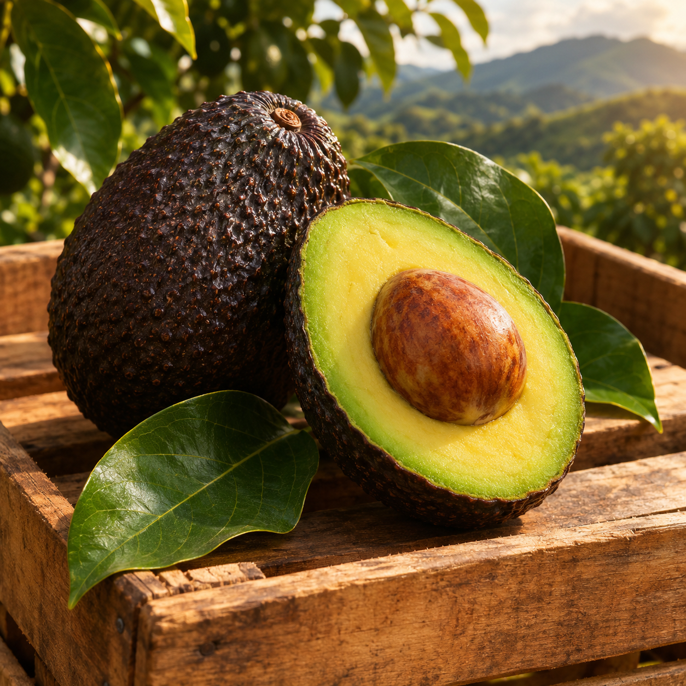
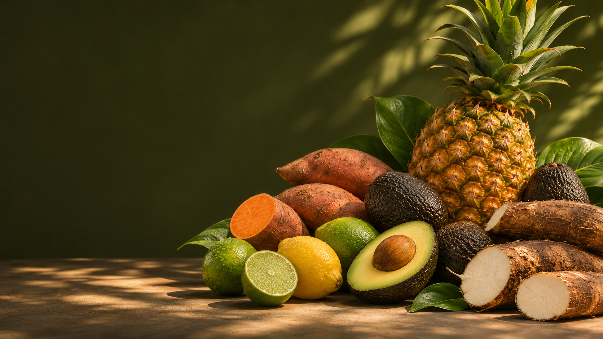

PANAMÁ · FRUTAS Y VEGETALES FRESCOS
Frescura que
cruza fronteras.
Conectamos productos del campo con mercados que exigen calidad, cuidado y atención comercial cercana.
Explorar productos


PANAMÁ · FRUTAS Y VEGETALES FRESCOS
Conectamos productos del campo con mercados que exigen calidad, cuidado y atención comercial cercana.
Explorar productos
